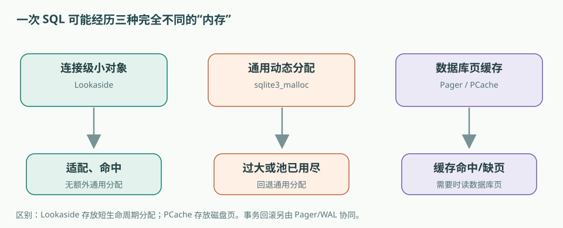
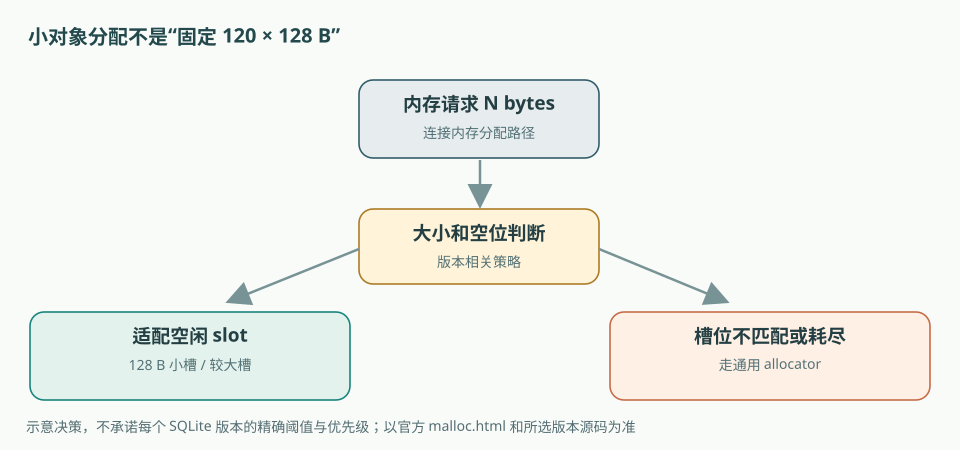
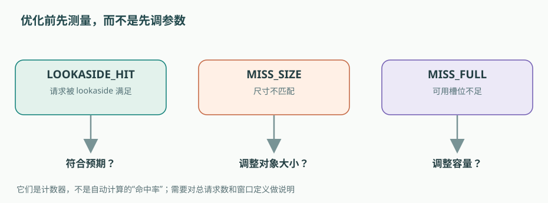

SQLite 内存管理：Lookaside、通用分配与页面缓存
理解一条 SQL 占用的内存，首先要分清短生命周期的对象分配和数据库页缓存；然后再测量 lookaside 的命中、大小不足与容量不足。
1. 为什么“SQLite 内存占用”不是一个池的问题？
同样是“内存”，可能装的是解析时创建的小对象、持久到语句完成的内部状态，或者从数据库文件读来的页面。把所有内存都归因于一个 LRU 缓存，会让调优方向完全错误。

通用内存分配器提供底层内存分配能力，接口由 sqlite3_mem_methods 抽象；lookaside 试图快速满足适用的小对象分配；Pager/PCache 为数据库页提供缓存与页面生命周期服务。关键是弄清各个子系统何时申请内存、何时释放以及谁维护计数。
2. Lookaside 不是永远只有一个 128B 的槽池
Lookaside 属于数据库连接级内存优化机制。其思想是预分配一定容量的 slot，小额分配可在该池内快速完成，不必频繁经过通用分配器。若分配请求不适用或池中没有合适的空位，则回退到通用路径。
SQLite 官方内存文档记载：从 SQLite 3.31.0（2020-01-22）开始，lookaside 支持双尺寸布局：包含 128 字节的小 slot 和较大的 slot，默认配置及拆分细节可能继续变化。不能把某一篇旧文章中的“120 个 × 128 B”写成全版本规则。详见 SQLite 内存管理官方文档第 3.3 节。

可通过 sqlite3_db_config(db, SQLITE_DBCONFIG_LOOKASIDE, pBuf, sz, cnt) 在连接没有未归还的 lookaside 分配时配置连接级池。修改配置最稳妥的时间是刚创建连接后、尚未准备 SQL 之前。具体参数含义应根据目标版本的 C API 文档核对。
3. Page Cache：缓存的是页，不是普通 malloc 块
Pager 为 B-Tree 提供页面访问、事务和日志相关抽象；pcache.c 定义缓存层逻辑，pcache1.c 提供默认页面缓存实现。页面缓存命中会减少底层读取，但缓存不是“脏页一满就直接写数据库文件”这么简单：写入必须遵守回滚日志或 WAL、锁以及事务提交协议。
对比两类资源的时间尺度：lookaside 常用于短生命周期的内部对象分配；页面缓存则可能因相同数据库页被反复访问而延长驻留。单个连接可能拥有多个数据库（如通过 ATTACH），缓存统计亦要明确范围。
| 机制 | 优化对象 | 主要可观察量 |
|---|---|---|
| Lookaside | 小尺寸动态分配 | HIT / MISS_SIZE / MISS_FULL |
| 通用 allocator | 更广泛的动态内存请求 | SQLite 全局内存状态接口 |
| Pager/PCache | 数据库磁盘页 | CACHE_USED / HIT / MISS / SPILL |
记住：Page Cache 的逻辑命中率不能直接等价于操作系统页缓存命中率，也不能用一次 SQL 的执行时间倒推出某个分配器的效率。
4. 用 sqlite3_db_status 观察，而不是编造“99% 命中”
SQLite 在 数据库连接状态定义中分别公开了 lookaside 命中、申请尺寸过大和槽池耗尽三个观测项。其中 SQLITE_DBSTATUS_LOOKASIDE_HIT、MISS_SIZE、MISS_FULL 的current 输出恒为 0；读取它们的 high-water 输出才能得到累积事件计数。这一点与 CACHE_HIT/CACHE_MISS 不同。

下面的最小 C 程序打印 high-water 计数。运行成功后你会看到三个非负整数；具体数值取决于 SQLite 版本、配置和执行的 SQL，这里不提供虚构的固定命中率。
#include <stdio.h>
#include <sqlite3.h>
static void show(sqlite3 *db, int op, const char *name) {
int current = 0, highwater = 0;
int rc = sqlite3_db_status(db, op, ¤t, &highwater, 0);
if (rc == SQLITE_OK) printf("%s: %d\n", name, highwater);
else fprintf(stderr, "%s unsupported: %d\n", name, rc);
}
int main(void) {
sqlite3 *db = NULL;
if (sqlite3_open(":memory:", &db) != SQLITE_OK) {
fprintf(stderr, "cannot open database\n");
if (db) sqlite3_close(db);
return 1;
}
char *err = NULL;
int rc = sqlite3_exec(db,
"CREATE TABLE t(x TEXT);"
"INSERT INTO t VALUES('hello'),('world');"
"SELECT * FROM t;", NULL, NULL, &err);
if (rc != SQLITE_OK) {
fprintf(stderr, "%s\n", err ? err : "SQL error");
sqlite3_free(err);
sqlite3_close(db);
return 1;
}
show(db, SQLITE_DBSTATUS_LOOKASIDE_HIT, "hit");
show(db, SQLITE_DBSTATUS_LOOKASIDE_MISS_SIZE, "miss_size");
show(db, SQLITE_DBSTATUS_LOOKASIDE_MISS_FULL, "miss_full");
sqlite3_close(db);
return 0;
}# 源代码保存为 examples/05_lookaside_status.c
cc -O2 examples/05_lookaside_status.c sqlite3.c -I. -ldl -lpthread -lm -o lookaside-demo
./lookaside-demo使用系统安装的 SQLite 开发库也可以编译，但要确保头文件与链接库版本匹配。这里没有用 PRAGMA lookaside(...)，因为连接级配置由正式 C API 提供。
5. 调优前后如何做可信对比
对于相同 SQL 工作负载，记录编译选项、数据规模、连接数量、重复次数与三类计数。只改变一个配置项，再重新测量。若 MISS_SIZE 多，先调查分配请求大小是否超过 slot；若 MISS_FULL 多，再评估池容量及并发工作集。不要只盯单次命中计数，因为大对象与页面缓存可能主导总内存。
复现实验清单
- 先运行默认配置，记录库版本与 lookaside 计数；
- 添加大量短字符串插入和复杂表达式查询，记录数值差异；
- 阅读 SQLite DBSTATUS 文档并增加
CACHE_HIT和CACHE_MISS的输出； - 比较两个观测窗口，但不把绝对计数误称为命中率。
思考：为什么 lookaside 变快不一定使查询更快？
一次 SELECT 的主要成本可能来自 SQL 规划、磁盘 I/O、索引访问、排序、锁或上层应用逻辑。即使小对象分配开销下降，在端到端耗时中也可能很难观察到明显变化。还需要重复测量、基线和统计分布。
下一章将继续沿源码追踪返回码传播、诊断与调试。
来源与延伸阅读
根据以下原始资料复核主路径与接口；图形为解释用简化模型，具体结构体字段、字节码和版本行为必须以所读源码检出为准。
- Dynamic Memory Allocation in SQLite · SQLite 官方原始资料
- Status Parameters · SQLite 官方原始资料
- sqlite3_db_status API · SQLite 官方原始资料
- Architecture of SQLite · SQLite 官方原始资料